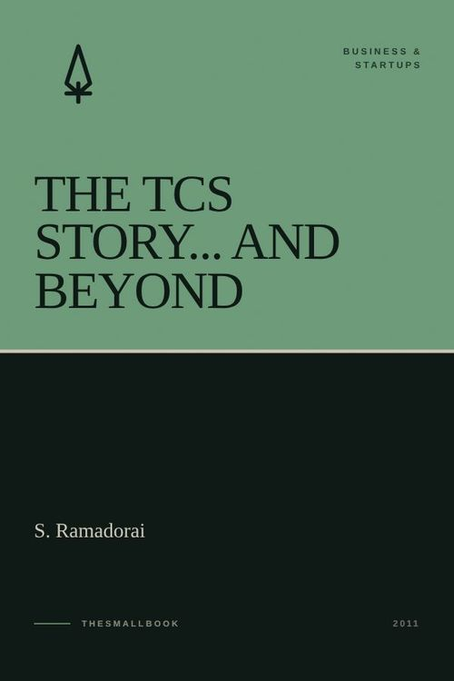

Library › Authors › S. Ramadorai
Books by S. Ramadorai
S. Ramadorai has one book in the library. Every book here is read down to the big idea, the lessons, the lines worth keeping and the actions worth taking. Start with the summary, then buy the full book if it earns a place on your shelf.

The TCS Story... and Beyond
2011 · 13 min · 8 lessons
TCS built Indian IT services through patience, trust and brutal delivery discipline, proving a services company can outgrow product companies for decades.
TCS began in 1968 as a data-processing unit inside Tata, punched punch-cards for utilities, and grew into the first Indian IT company worth $100 billion. Ramadorai, CEO from 1996 to 2009, tells how TCS bet early on software exports when India barely had computers, survived the Y2K gold rush without becoming a body shop, built the Global Network Delivery Model (follow-the-sun development across continents), and scaled from $100 million to $6 billion under his watch. The deeper story is cultural: quiet execution...
Lessons in the summary
- The Patient Decade Before the Boom
- Y2K: The Windfall That Could Have Killed
- Industrialize Delivery: The Global Network Delivery Model
- Customer Marriages Outlast Market Cycles
- Scale Is a Culture Question, Not a Headcount Question
- Going Public Without Losing the Long Game
- Build Where the Talent Lives, Sell Where the Clients Are
- Services Can Compound: The $100B Question
Lines worth keeping
- Experience certainty: that was the brand promise, and every delivery had to keep it.
- In services, your process is your product.
- Grow with the customer, or eventually grow without them.
Questions S. Ramadorai helps answer
Read nearby authors next
- Devdutt Pattanaik 5 books
- Rashmi Bansal 5 books
- Robin Sharma 5 books
- Chetan Bhagat 4 books
- Seth Godin 4 books
- Alex Hormozi 3 books
- Gurcharan Das 3 books
- Nir Eyal 3 books
Questions S. Ramadorai helps answer
Where should I start with S. Ramadorai? Start with The TCS Story... and Beyond: TCS built Indian IT services through patience, trust and brutal delivery discipline, proving a services company can outgrow product companies for decades.